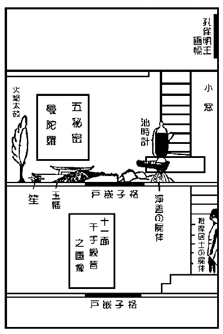

一、密室の孔雀明王
――（前文略）違法とは存じましたけれども、貴方様がお越しになるまで、所轄署への報告を差控える事に致しました。と申しますのは、まことにそれが、現世では見ようにも見られない陀羅尼の奇蹟だからで御座います。
ある金剛菩薩の
恐らく読者諸君は、盤得沙婆のこの一書を指して、如何にも狂信者らしい、荒唐無稽を極めた妄覚と嗤うに相違ない。が、事実それには、微塵の虚飾もなかったのだ。その三十分後には、法水麟太郎と
寂光庵は、新薬師寺を髣髴とする天平建築だった。その物寂びた境域には、一面に菱が浮かんでいる真蒼な池の畔を過ぎて、
 子
子法水は庵主盤得尼の切髪を見て、この教団が有髪の尼僧団なのを知った。盤得尼は五十を越えていても脂ぎって艶々しく、凡てが圧力的だった。見詰めていると、顔全体が異様に昂って来る感じがするけれども、そこにまた、冷酷な性格を充分満せないような、何んとなく秘密っぽい画策的な、まるで魔女のような暗い影が揺めいているようにも思われるのだった。間もなく、法水は案内されて、本堂の横手口にある室に入った。そこは、左右に廊下を置いていて、書院一つ隔てた外縁の
子窓からは、幽暗な薄明りが漂って来る。入ると、盤得尼は正面の扉を指差して、「此処で御座います」と男のような声で云った。「夢殿と申しまして、以前は寺院楽と黙行の修行所に当てて居りましたのですが、最近では此処で、推摩居士が祈祷と霊通を致すようになりまして……」
そこには、黒漆塗の六枚厨子扉があって、青銅で
子障子が、格の間に嵌められてあった。然し、その重い網扉がけたたましい車金具の音と共に開かれ、推摩居士の年齢は

そこで、四つの創形を云うと、そのうちの二つは左右上膊部の外側、即ち肩口から二寸ほど下方にあって、残り二つは、左右腰骨の突起部、即ち大臀筋の三角部だった。何れも、人体横側の最高凸出部であり、その位置も左右ともに等しく、尚、その上下の一対が、垂直線の両端に位しているのが注目されるが、何よりの駭きと云うのは、明瞭な字紋様の創形と、それに到底人間業とは思われない――恰度精巧な轆轤で、刳り上げたような一致が現われている事であって、またその二つが、左右とも微細な点に至るまで符合しているのだった。それをなお詳細に云うと、上膊部のものは、最初上向きになった鋭い鉤様のものを打ち込んだらしく、創底が三
「何んとなく僕には、これが梵字のように思われてならないのですが」
「明らかにそうで御座います。これは、（訶）と（
 ）の二つで御座いまして、双方ともに、神通誅戮と云う意味が含まれて居ります」
）の二つで御座いまして、双方ともに、神通誅戮と云う意味が含まれて居ります」と盤得尼は、妙に皮肉にともとれる微笑を湛えて云い返した。
「成程」法水は幾分蒼ざめた顔をして頷いたが、再び屍体に視線を向け始めた。屍体の周囲には、四個所の傷口から滴り落ちた僅かなものだけが、ところどころ点滴を作っているだけであって、全身には大出血特有の不気味な
「これで、すっかりお解りになりましたでしょう。尼寺の鉄則を何故推摩居士だけに許していたか……。御覧の通りこの方は男でもなければ女でも御座いません。つまり、そうなりましたと云うのは、日独戦争の折炸裂弾をうけて、両足と或る器官を失ってしまったからなので御座います。然し不思議な事には、それ以後此の方に、竜樹菩薩の化影が現われるようになりました」
「それは庵主、この太腿で、一目瞭然たるものなんですよ」法水が白々し気に云い返した。「内側へ捻れているでしょう。これで下肢が完全ですと、恰度馬の足のような形が見られるのです。それを内飜馬足とか云いましてね、たしか外傷性のヒステリヤには、一番多く見る現象なんですよ。そうすると、変則な強直をしている点に、第一説明が付きますし、何より犯人が、その無意識状態を利用した許りか、日頃不思議な法術の種になっている
「
 そうなりますかね」盤得尼は怒りに顫えながらも嘲弄の響きを罩めて、「そうすると、あれは一体どうなるのでしょうか、お気付きになりませんか？ 階段の頂上から此処までの間に、血の滴り一つないのですよ。ねえ法水さん、血みどろの推摩居士は、大体どう云う方法に依って此処まで運ばれて来たのでしょうね？ それに、どう考えたって、自分の着衣に血を移すような愚かな自殺的行為を、第一犯人のする気遣いがないでは御座いませんか」
そうなりますかね」盤得尼は怒りに顫えながらも嘲弄の響きを罩めて、「そうすると、あれは一体どうなるのでしょうか、お気付きになりませんか？ 階段の頂上から此処までの間に、血の滴り一つないのですよ。ねえ法水さん、血みどろの推摩居士は、大体どう云う方法に依って此処まで運ばれて来たのでしょうね？ それに、どう考えたって、自分の着衣に血を移すような愚かな自殺的行為を、第一犯人のする気遣いがないでは御座いませんか」事実盤得尼の云う通りだった。それまで二人ともそれに気付かなかったのは、光線の加減で五、六段から上が血溜りのように見えたからだった。それから、法水は階下の調査を始めたけれども、床の嵌戸に附いている錆付いた錠前を壊して、床下から数片の金泥を拾い上げたのみの事だった。そうして調査が、赭岩ばかりで出来た海底のように、仄暗い階下から離れて、階段の上に移された。
然し、階段の中途まで来ると、さしもの彼も思わず棒立ちになってしまった。パッと眼を打って来た
階上は階下と同様無装飾の室だった。階段を上り切った右手の壁には、鉄格子を嵌めた小窓が一つあって、残り三方は得斎塗りの黒壁で囲まれていた。また、降り口の突き当りには、もう一つ階段が作られているのだが、それは屋根裏の三階に続いているものであって、その部分だけが切り込まれ、右側には、壁に添うた突出床が出来ている。と云うのは、三階の床が、所謂神馬厩作りだからである。従って、そこの床寄り約四分の一ばかりの間が、長方形に切り取られているので、振り仰ぐと上層の暗がりの中に、巨大な竜体のような梁が、朧げに光って見えるのだった。さて法水は、散り敷かれている金泥の小片を、一々手に取って調べたけれども、表面に血痕が附着しているのも、またしていないのもあって、その二様のものが雑然と入り乱れている始末なので、最早血痕の原型を回復する事は不可能に違いないのだった。けれども、打ち倒れている四流の玉幡を見ると、それが、ところどころ僅か許り、金泥の斑点を残しているままで、殆んど赤裸に引ん剥かれ、曼陀羅の干茎が露き出しになっている。それからだけでも、この無数の片々が、以前玉幡の衣だった事は明らかであるけれども、一方、金泥の上には踏んだ跡がなく、曼陀羅の肌にも掻傷一つないと云う始末だった。一体、金泥は如何なる方法に依って剥ぎ取られ、そして散華が起されたのだろうか！
法水は、金泥を一個所に掻き集めて、調査を始めた。床には血の点々が僅か残っているだけであったが、此処で、階上の室内に於ける配置を云うと……、中央には、階下から眺めた通りに格子形の嵌戸が切ってあって、その後方には、膝蓋骨の下部にビッタリ付くように作られてある、推摩居士の義足が二本並んでいた。前方には、竹帙形に編んだ礼盤が二座、その左端に火焔太鼓が一基、その根元に笙が一つ転がっている。二つの礼盤の中央には、五鈷鈴や経文を載せた経机が据えられ、右の座の端には、古渡りらしい油時計が置かれてあった。それは、目盛の附いた、円鐘形の硝子筒の中に油を充たして、中部の油が、長柄の端にある口芯まで流れて行き、その点火に伴う油の減量に依って、時を知る仕掛なのである。が、その時は既に灯は消え、不思議な事に目盛は二時を指していた。そして、礼盤の突当りに掲げてある、「五秘密曼陀羅」の一幅を記せば、配置の説明の全部が終るのである。
尼僧浄善の屍体は、両眼を

「こりゃ酷い！」法水が

「では、毒物が……」検事が自説を述べようとするのを、法水は抑えて、
「所が支倉君、ここに途方もない
って、その眼で、自分の首に手が掛かるまでの、惨らしい光景を「見給え、水分が少しもない。そして、恰度木を
然し、立ち上ると法水は、ブルッと胴慄いして、明らかにその顔色には、容易ならぬ例題に直面しているのを、語るものがあった。
「だが支倉君、そんな事よりも、あれだけの血が一体何処へ行ってしまったのだろう？」
「ウン、確かに体外血量の測定をする必要はあると思うね。吸うのもいいだろうが、吸血鬼でも人間じゃ、立ち所に恐ろしい生理が起ってしまうぜ」と検事が尤もらしく呟くのを、法水は嘲けり返すように見て、
「所が、此の事件には、ポルナで働いたチームケ教授は要らないのだよ。此処に散らばっている金泥全部を集めた所で、恐らく二百
と暫く
「伝声管で御座います。礼盤の右手は浄善、
――推摩居士に兆候が現われたので、盤得尼と浄善が夢殿の中へ連れ込み、盤得尼は油時計に、零時の目盛まで油を充たして点火し、夢殿を出たのが零時五分。そうすると、扉を出ると同時に笙が鳴り始めたけれども、火焔太鼓の音は聴こえず、その笙も二、三分鳴り続けたのみで、その後は一時十五分に、智凡尼が変事を発見するまで、物音一つしなかったと云うのである。尚、尼僧達の動静に就いて云えば、盤得尼が自室に、普光は書院に、寂連は遙か離れた経蔵に、智凡は本堂の飾り変えをしていたと云うのみの事であって……、更に、事件を境にして夢殿内に起っていた変化と云えば、小窓が開かれていた事と、油時計が一時三十分を指して消えている――と云う二つに過ぎないのだった。
以上の聴取を終ると、法水は再び動き始めた。
「それでは支倉君、床に付いている推摩居士の皮膚の跡を探すとするかな」
所が、その捜査は空しく終ってしまい、真夏の汗ばむ陽盛りに、鏡板の上に付いていなければならぬ筈の、何物をも発見されなかった。が、最後に至って、検事の眼が床の一点に凍り付いてしまった。彼が無言のまま指差した個所を、横合から透して見たとき、法水は、自分の心動を聴いたような心持がした。左手の推摩居士が坐っていた礼盤から始まって、三階へ行く階段の方角へ点々と連なっているのが、中央の塊状を中心に、前方に三つ後方に一つ、それぞれに
「成程、素晴らしい犯人の制作です。これでは、画中から孔雀が脱け出して階段を下り、そうして鋭い爪で推摩居士を掻き
 ったばかりではなく、更に、四本の手を伸ばした背上の菩薩が、浄善の首を絞めた――と云うより外にないでしょう」と一端法水は、夢見るような調子で呟いたけれども、それからすぐ、冷然と盤得尼に微笑み掛けた。「所が、庵主、この
ったばかりではなく、更に、四本の手を伸ばした背上の菩薩が、浄善の首を絞めた――と云うより外にないでしょう」と一端法水は、夢見るような調子で呟いたけれども、それからすぐ、冷然と盤得尼に微笑み掛けた。「所が、庵主、この「承わりましょう――一体何を仰言りたいのです」
盤得尼は屹然と額を上げた。
「要するに、
その間盤得尼は、ただ呆れたようになって、相手の顔を見詰めていたが、キュッと皮肉な微笑を泛かべて云い放った。
「そうしますと法水さん、その司教と置き換えられた私は、一体何処から入って何処から出た事になるのでしょうか。実を申しますと、今も入口の網扉を私は
密室、しかもその中で、大量の血が消え失せてしまっている――。流石の法水も、ハタと行き詰まって、まざまざとその顔には、羞恥と動揺の色が現われた。
二、火焔太鼓の秘密
盤得尼が去ってから、尚も三階の一劃を調べたけれども、そこには何一つ発見されなかった。そして、再び二階に下りると、法水は油時計を指差して云った。
「判ったのは、たったこれだけさ。一時十五分に発見した時消えていたと云う油時計が、何故二時を指しているか――なんだ。その気狂い染みた進み方からして、犯人が小窓を開いた時刻が判るのだがね」
「そうすると、多分消えたのは、金泥が散った時じゃないだろうか」
「うん、まずそうだろうと思うが……」と法水は気のない頷き方をして、「所で、問題はこの油容器の内側にあるんだが……、現に今も見る通り、
「成程。然し、犯人が窓を開いた意志と云うのは、恐らくそれだけじゃないと思うね。或は、兇器を捨てるためにか……」
それを法水は、力のない笑い声を立てて遮った。
「では、探して見給え――決してありっこないからね。梵字の形が、左右符合しているのを見ただけでも、とうに僕は、人間の手で使うものでない――と云う定義を、この事件の兇器に下しているんだ。それよりも支倉君、孔雀の趾跡が一体どうして附けられたか――じゃないか。たとえば、推摩居士を歩かせたにした所で、たかが膝蓋骨の、三角形ぐらい印されるだけだからね」
「すると、何か君は？」
「うん、これは非常に奇抜な想像なんだが、さしずめ僕は、推摩居士に逆立ちをさせたいんだよ。それも掌を全部下ろさずに、指の根元で全身を支えるんだ」
「冗談じゃない」検事は呆れたような顔になって叫んだ。
「所が支倉君」と法水は真剣に顔を引き緊め、一歩一歩階段を下りながら云い始めた。「大体、其処以外には、何処ぞと云って、推摩居士の肉体に理論上ああ云う作用を、現わす部分がないのだからね。と云うのは、第二関節以下しかない、推摩居士の右の中指と左の無名指に、所謂
 ンが神経代償機能と名付けた現象が起るからなんだよ。繊維だけが微かに触れ合っている周囲の神経が、栄養や振動を伝えてくれて、その瀕死の代償をしてくれるからなんだ。所が、これは、外傷性ヒステリー患者の、実験報告にも現われている事だけれど……、周囲の神経が痲痺してしまうと、
ンが神経代償機能と名付けた現象が起るからなんだよ。繊維だけが微かに触れ合っている周囲の神経が、栄養や振動を伝えてくれて、その瀕死の代償をしてくれるからなんだ。所が、これは、外傷性ヒステリー患者の、実験報告にも現われている事だけれど……、周囲の神経が痲痺してしまうと、それから夢殿を出ると、その足で普光尼の室へ赴いた。普光尼はとうに意識を取り戻していたが、激しい疲労のために起き上る事は出来なかった。四十に近い、思索と理智に及んだ顔立ちで、顎を布団の襟に埋めながらも、正確な調子で答えて往った。
「誅戮などと云う怖ろしい世界が、御仏の
「なに、声をお聴きでしたか？」
「そうです。夢殿から庵主が出る網扉の音が聴こえて、それから間もなくの事でした。笙が鳴り出すと、それにつれてドウと板の間を踏むような音が聴こえました。そして、その二度目が聴こえると同時に、ブーンと云う得体の判らない響きがして、それなり笙も止んでしまったのです。それから二十分ほど後になってから、推摩居士が四本の手と叫ぶのを聴きましたが、二階のはそれだけで、今度は階下の伝声管から響いて参りました」
「すると、伝声管は二本あるのですね」
「ええ、階下の方は、恰度階段の中途で、横板と壁との間にありまして、それは、鳥渡判らない場所なので御座います。それで推摩居士が、今度は低い声で云うのでした」普光尼は幽かに声を慄わせ、異様な光を瞳の中に漂わせた。「宝珠は消えたが、まだ孔雀は空にいる――と斯う
「有難う。所で、推摩居士の屍体を御覧になりましたか？」と法水は、突然異様な質問を発した。
「ハア、先刻寂蓮さんと一所に……。それで、すっかり疲れてしまいましたのですが」
「すると貴女は、推摩居士の行衣の袖に、何を御覧になりましたね」
「サア一向に……。私、そんな事はてんで存じません」と普光尼は、いきなり
「二本の伝声管か……」廊下に出ると、法水は意味あり気な口吻を洩らしたが、側の室が眼に入ると検事に向って、「どうだね支倉君、ここにある天平椅子にかけて、残りの訊問をする事にしようじゃないか」
最初に呼んだ寂蓮尼は、まさにゴッツオリの女だった。まだ二十六、七だろうけれども、見ていると透通ってでも行きそうな、何んとなく人間的でない、崇高な非現世的なものが包んでいるように思われた。所が、図書掛りを勤めているこの天使のような女は、事件当時経蔵にいた旨を述べ終ると、推摩居士の死因に就いて、驚くべき説を云い出したのである。
「推摩居士は、御自分で美しい奇体な墓場をお作りになって、その中で、仮死の状態に入られたのではないかと思いますわ。やがて屹度、あの方は蘇えるに違い御座いません。それから、浄善さんの死因に就いては、智凡さんが
「なに仮死ですって。たしか
「左様で御座います。現実その証拠には、内臓が損われて居りませんし、また、事実些程の出血がなかったにも拘らず、てっきり大出血を思わせるような虚脱状態が現われて居ります」と寂蓮尼はキッパリと云い切ってから、「そうしますと貴方は、ハニッシュの天啓録をお読みにはならなかったのですね。瑜珈式呼吸法は？ ベエゼルブブの呪術は？ ダルヴィラやタイラーの著述は如何で御座いますか」
「遺憾ながら、いずれもまだ読んでは居りません」と法水は、アッサリ、ブッ切ら棒な調子で答えたけれども、続いて俄然挑むような態度に変って、「所が寂蓮さん、もう後六時間と経たぬ間に、推摩居士の内臓は寸断されなければならないのですよ」
「エッ、解剖を！」寂蓮尼はのけぞらんばかりに驚いたらしく、彼女の全身に、まるで眩暈を感じた時のそれのような動揺が起って行った。「何故生体に刀を入れる必要があるのです。庵主が大吉義神呪経の吸血伝説を信じているように、貴方がたも大変な誤ちを冒そうとして居ります。それこそ、適法の殺人者ですわ」
「それが、証拠の虚実を決定するものだとすれば……、一向構わんではありませんか」法水は冷然と云い放った。「たしか、ヴォルテールでしたね。ストリキニーネさえ混ぜれば、呪文でも人間を殺せる――と云ったのは」
寂蓮尼は顔一杯に凄愴な隈を作って、憎々し気に法水を
「ねえ支倉君、たしかあの女は、推摩居士の巫術［＃「巫術」は底本では「※［＃「一／坐」、197-下-9］術」］の方に興味を持っているんだよ。どうやら、此の寺が二派に分れているとは思わんかね。そこに動機がある……」
法水がそう云った時、智凡尼が入って来た。その、薄髭が生えて男のような骨格をした女は、座に着くと莨を要求してスパスパやりながら、
「莫迦らしいとはお思いになりませんか。推摩居士が、真実竜樹の化身ですのなら、何故南天の鉄塔を破った時のように、七粒の
「成程、それは面白い説ですね。所で貴女は、浄善の死因に就いて何か御存知なようですが」
「実は、誰にも云いませんでしたが、私、犯人の姿を見たのですわ」
「何んですって
」検事は思わず莨を取り落したが、智凡尼は静かに語り始めた。「済んだ合図の笙が鳴ったので、鍵箱から厨子扉の鍵を出して、網扉を明けますと、天井の格子に何か急いで複雑な動作をしているような影が映りました。そして、鳴っていた笙がピタリと止んでしまったのです。然しその時は、側の推摩居士に気が付いたので、私は暫くその場に立ち竦んで居りました。けれども、間もなく気を取り直して、階段の上まで上ってみますと、浄善さんはあられもない姿で、両袖で顔を覆って仰向けになって居りました。ああそうそう、その時階下には誰も居りませんでしたが……」
「そうしてみると、現在の浄善とは、屍体の状態が異う事になる」と云って検事が法水を見ると、法水も
「浄善がその時まだ生きていたか、それとも屍体が動いたか――だよ。けれども、強直が来ない前は微動する訳もない筈だぜ」
「そうです。生きていた浄善は、その後に殺されたのですわ」智凡尼はグイと刳るような語気で云った。「だって、推摩居士が魔法のような殺され方をしているのを、眼前に見ながら、その側で凝っとしていると云う訳はないでしょう。それに、私がそれからすぐ飛び出して、その旨を庵主に告げると、庵主は夢殿に入ったきりで、暫く出て来なかったのですからね。私と寂蓮さんはその後に見に行ったのですが、その時は、浄善さんの姿勢が変ったと云うだけの事で、他にはこれぞと云う異状も御座いませんでした。つまり、浄善さんが推摩居士を殺して、その浄善を庵主が殺したのですわ。此の論理には、ともかく中断が御座いませんわね。多分それで、庵主は一番いい夢を見る、阿片を造る積りだったのでしょう」
そして、智凡尼はゲラゲラ笑いながら、出て行ってしまった。法水も同時に立ち上った。
「僕は鳥渡経蔵を見て来るからね。君は、盤得尼から浄善の屍体に就いて、詳細な要点を聴取しといてくれ給え」
それから一時間程経って、二度目の網扉の音がしたかと思うと、再び法水が現われた。そして、検事と獣のような顔で、睨み合っている老尼に慇懃な口調で云った。
「御安心下さい。智凡尼の偏見が、これですっかり解けましたよ。支倉君、やはり浄善は、発見した際には死んでいたのだ」と一冊の書物を
「それで、何か？」
「その中に斯う云う記述があるのです。――予の湖畔に於ける狩猟中に、朝食のため土人の一人が未明
「冗談じゃない」検事は此処ぞと一矢酬いた。「一体、何処に外傷があるんだ」
「それが、襟足にある短かい髪の毛の中なんだよ」と法水が掌を開くと、その中から、四寸程の頭髪の尖を、巧妙な針に作ったものが現われた。「所で、僕がどうして発見したかと云うに、普光が笙の鳴っている間に聴いたと云う、妙な音響からなんだ。板の間を踏むような、ドウと云う音が二度ばかりして、その二度目の直後に、ブーンと唸るような音が聴こえたと云ったね。では、仮りにそれを、太鼓の両側の皮を、内側から強く引緊めて置いて、全然振動を、起させないようにしたのを打ったとしよう。そして、二度目にその緊縛が解けたとしたら、凹みの戻った振動でもって、恰度そう云うような唸りが起りはしないだろうかね。案の状、その思い付きからして火焔太鼓を調べて見ると、果して其処に、三つ針穴程の孔が明いていた。つまり、そのうちの二つは、皮の両側を引き緊めた糸の痕であって、またもう一つのには、二度目の撥で糸が切れ、両側とも
そうして、浄善の死因に関する時間的な矛盾が一掃されてしまうと、法水は再び、盤得尼に云った。
「とにかく、その発見からだけでも、貴女に対する疑惑は稀薄になります。つまり、智凡が見たと云うのは、笙を吹いていた犯人の影と云う事になりますが、さてそうなると、浄善の屍体を動かした犯人が、その場は三階へ隠れたにしてもです。一体どうして、それから、あの場所を脱出したものか――問題は再び密室で行き詰まってしまうのですよ」
「それが取りも直さず、孔雀明王の秘蹟では御座いませんか？」と盤得尼は、透かさず眉を張って尚も執拗に奇蹟の存在を主張するのだった。それを、法水は冷笑で酬い返した。
「然し、この点だけは、誤解なさらないで頂きたいのです。貴女にしても、ただ智凡尼の推測から解放されたと云うだけで、つまり、謬説から遁れたと云う事は、正しい推定から影を消したと云う事にはなりませんからね。大体他の三人にしたところが、当時の動静を、的確に証明するものがない始末ですから。いずれ、僕が密室を切開した際に、改めて四人の顔を、膿の上へ映してみる事にしましょう」
盤得尼が出て行ってしまうと、法水は
黄色い斑点の中に赤黒い蝙蝠 ――盤得尼
全部暗褐色の瓢箪――寂蓮尼
真黒な英仏海峡附近の地図――智凡尼
普光尼は答えず。
「成程、心理試験か……」検事が訊ねるともなしに呟くと、この一葉の上に、法水が狂的な憑着をかけているのが判った。全部暗褐色の瓢箪――寂蓮尼
真黒な英仏海峡附近の地図――智凡尼
普光尼は答えず。
「うん、推摩居士の行衣の右袖に、瓢箪形の血痕があったっけね。その印象を、僕は求めたのだよ。で、これを見ると、各自が一番印象をうけた時の位置と、
三、吸血菩薩の本体
それから三日後に、法水と検事は再び寂光庵に赴いた。が、それまでに彼が得た情報と云えば、穴蔵に横たえた推摩居士の屍体に、瑜珈式仮死を信じている寂蓮尼が凄惨な凝視を始めた――と云う事のみだった。その食事も採らず一睡もしない光景からは、聴くだけでも、
「僕は貴女だけに聴いて頂いて、当時貴女が、伝声管から聴き洩らした音を憶い出して頂きたいのです。所で、その前に、犯人が一体どう云う方法で、密室から脱出したものか――それをまず、お話する事にしましょう」
ああ、法水は何時の間にか、密室の謎を解いていたのだ。彼が語り始めた犯人の魔術とは、一体何んであったろうか？
「僕がこの説を組立てる事が出来たのは、多数の手や首を持っている、所謂多面多臂仏の感覚からなのです。所で、御承知の通り夢殿には、階下の正面に、殆んど等身大と思われる十一面千手観音の画像が掲っています。そして、僕がその感覚に気付いたと云うのは、恰度事件当日四時半頃の事なのでした。その時表面の厨子扉には、横手の
子窓が黒漆の上に映って居りました。所が、それから網扉を開くと、正面の千手観音に不思議な運動が起るのを見たのです。と云うのは、最初厨子扉に映った子を見詰めて、それから網扉に嵌まっている縦桟の格障子を見たからなんです。つまり子窓の残像が縦桟の間に挾まって――そうした時に網扉を開いたのですから、当然一つの実像と一つの残像とが交錯して、そこに所謂驚盤現像（縦穴の並んでいる円筒を廻転させると、内部の物体が動くように見える活動写真的現像）が起らねばなりません。然しその現象は、網扉が眼前から去ると同時に、当然止むだろうと思うでしょうが、事実は、その後も暫く続いて居りました。多分、視軸に影響して廻転が続くので、それにつれて、やはり以前通りに動いたのでしょう。すると、眼前の十一面千手観音にどう云う現象が起ったと思いますね。臂を上方に立てている肩口の七本と、下に向けている腰辺の四本が……、各々が一本の手になってしまって、その手を左右に振っているかのような錯視が現われたのです。つまり、残像の列と符合している縦の線が、目撃者に動いたように見えたからなんですが、同時にそれにつれて、全身の線や襞が、不気味な躍動を始めて来ました。ですから、僕がそれと気が付いた時、これが密室を開く鍵ではないかと思ったのですよ。けれども、発見当時の刻限は恰度反対でして、生憎子窓から陽差が遠ざかっていたのです。ですから、改めてそこに、新しいフィルターを探さねばならなくなりました。所が、画像に運動感を与え、一人の白衣を被った人物を、その眩影の中に隠してしまう――と云う不可思議な作用が、階上にある浄善の屍体の中にあったのですよ」「君は、何を云うんだ？」検事は思わず度を失って叫んだ。
「そうなんだ支倉君。あの屍体――いや動けない生体が、自転したからなんだよ。たしか君は、四肢の妙な部分に索痕が残っていたのを憶えて居るだろうね。あんな所を何故犯人が縛ったかと云えば、精神の激動中に四肢の一部を固く縛って血行を妨げると、その部分に著しい強直が起るからなんだ。それと同じような例が、刑務所医の報告にもある事で、死刑執行前に殆んど知覚を失っている囚人の手首を縛ると、全部の指が突張ってピインと強直してしまうそうだがね。この事件でも犯人は奇怪な圧殺をする前に、浄善の手足に紐を結び付けて置いたのだよ。それを詳しく云うと、まず両膝と両肘を立てて、腕は上膊部の下方、肢は大腿部の膝蓋骨から少し上の所を、俗に云うお化け結びで緊縛して置いたのだ。それから、その緊縛を右膝と左腕、右腕は左膝と結び付けて、その二本の紐を中央で絡めグイと引緊めたので、浄善は頗る廻転に便宜な、まるで括猿みたいな恰好になってしまった。そうして置くと、やがて強直が始まるにつれて、当然関節の伸びる方向が違うからね。二本の紐が反対の方向に捻れて行って、浄善の身体が廻転を始めたのだ。そして、強直が極度になってピインと突っ張ってしまう頃には、それに加速度も加わって、まるで独楽のような旋廻になってしまったのだよ。そう判ると、格子扉から落ちて来る唯一の光線の中で、宛ら映写機のフィルターのように旋廻していたものがあった――それが取も直さず、浄善だったと云う事が判るだろう。勿論それが、千手観音に運動錯覚を起させて、目撃者に細かい識別を失わせてしまったのだ。事実、犯人は至極簡単な扮装で、画像の前に、像の衣の線と符合するように立っていたのだったよ。そして、それ以前に、まず屍体を廻転させて、それが頂点に達した時紐を解いたのだ――無論加速度で、暫くは廻転が止まなかったと、思わなければならないだろう。それから犯人は、笙の鳴り出す時刻に近附いたので、頃やよしと階下に下りて行った。所が、智凡尼は入るとすぐ、千手観音の画像が不気味な躍動をしているのを、発見したのだったけれども、これは屡出逢う事で、とうに脳裡の盲点になっていたのだから、当然気にしなかったと同時に、その時階下が、誰もいない空室だったと誤信してしまった。で、その一瞬後に、階上に動いている影を発見したのだったけれども、嵌格子を斜下から眺めて、そこに影らしい珍しいものが、チラッと映じたのみの事で、それをすぐに確かめようとはしなかった。と云うのは、横手にある異形な推摩居士を発見したからなんだよ。それから推して考えると、推摩居士を階段の上り口に下ろしたと云うのは、その殆んど全部の目的が、フィルターの正体を曝露させないために、すぐ目撃者の注意を、惹くためだったに相違ない。斯うして、精密な仕掛を種に錯視を起させて、やがて智凡尼が二階へ上った隙に、明け放した網扉から脱け出したのだが……。さて、残った謎と云うのは、笙がどうして鳴らされたか――と云う一事なんだよ。階下に潜んでいる犯人が、階上の笙を吹けると云う道理はないし、それとも、事実二階に人間がいたとすれば、密室の中へ、更にもう一つの密室が築かれてしまうのだよ」
「ウン、浄善の姿勢が変ったと云う事だけは、不自然に作られた強直が絶命後に緩和するからね。それは、それで解るにしても……」と検事が合槌を打った時に、青白い光が焼刃のように閃いて雷鳴が始まった。雷の嫌いな法水は、鳥渡顔色を変えたが、そのためか一層蒼白になって、凄じい気力を普光尼に向けた。
「そこで、私は最後の断案を下したいのですが、それを云う前に、先日秘かに試みた心理試験の結果をお話する事にしましょう。と云うのは、推摩居士の行衣にある瓢箪形の血痕を、各人各様に見た印象が
法水論理と巧妙なカマに掛かって、普光尼は一溜りもなく、その場に崩れ落ちてしまうものと思われた。所が意外にも、彼女の態度が見る見る硬くなって行って、やがて厳粛な顔をして立ち上った。
「いいえ、どうあろうと一向に構いませんわ。
斯うして、法水の努力も遂に徒労に終って、階下の密室が解けたと思うと、その一階上に、更に新しいものが築かれてしまった。が、法水は一向に頓着する気色もなく、その日は他の誰にも遇わず、経蔵の再調査だけをして、
「やはり支倉君、僕は考える機械なんだね。書斎に籠ると、妙に力が違って来るように思われるんだ。とうとう孔雀明王の四本の手を
 いでやったよ。然し、それは偶然思い付いたのでなくて、例の浄善尼がした不思議な旋廻が端緒だったのだ」
いでやったよ。然し、それは偶然思い付いたのでなくて、例の浄善尼がした不思議な旋廻が端緒だったのだ」それから、法水の説き出し行く推理が、さしも犯人が築いた大伽藍を、見る見る間に崩して行った。そして、夢殿殺人事件は、漸くその全貌を白日下に曝されるに至った。
「所で、君にしろ誰にしろ、結局行き詰まってしまうにしてもだ。浄善尼が奇術的な廻転をした事が判ると、一応は、飛散した金泥に遠心力と云う事を考えるだろうね。そして、あの四本の玉幡が気になって来るのだが、あんな軽量なものには、たとえばそれを廻転させたにしても、結局それだけの分離力のない事が明らかなんだからね。あの一番手近な方法を、残り惜し気に
「なに、重量と膨脹を！」検事は眩惑されたような顔になって叫んだ。
「うん、そうなんだ支倉君、結局そう云う仮定の中に、犯人の怖ろしい脳髄が隠されていたのだよ。とにかく、順序よく犯行を解剖して行く事にしよう。所で、事件の直前から、犯人が夢殿の中に潜伏していたと云う事は、当時各自の動静に、確実な
そう云ってから
「もとより画中の孔雀が抜け出すと云う道理はないけれども、それが孔雀明王の出現と云えるのには他に理由がある。と云うのは、推摩居士の異様な歩行が始まったからなんだ。君は、ヒステリー痲痺患者の手足に刺戟を与えると、様々不思議な動作を演ずると云う事実を知っているだろう。然しその前に、所謂体重負担性断端――それを詳しく云うと、義足を要する肢のどの部分が、
「ああ」検事は溜らなく汗を拭いて、「だが、どうして推摩居士は三階へ上って行ったんだ？」
法水は卓上の一書をパラパラとめくって、最後に指で押えた頁を検事に突き付けた。
「支倉君、君はヒステリー患者の五官のうちで、何が一番最後に残るか――、それが視覚だと云う事を知っているかね。また、その中でも赤色だけは、発作中でさえも微弱に残っているのだ。勿論、巫術［＃「巫術」は底本では「※［＃「一／坐」、204-下-15］術」］などでは、
読み終ると、法水は椅子を前に進め、
「所で支倉君、そこに推摩居士を導いたものと、もう一つ、傷跡に梵字の形を残したものがあったのだ。勿論、犯人が、赤色の灯を使って、推摩居士を導いた事は云う迄もないだろう。そして、三階の階段口にある突出床から、下に方形の孔を開いている玉幡の中へ落し込んだのだ。また、それ以前に犯人は、繍仏の指の先に、隠現自在な鉤形をした兇器を嵌め込んで置いたのだが、その兇器は、その場限りで消え失せてしまったのだよ。で、最初まず、如何にして梵字形の傷跡が出来たか――それを説明しよう。一口に云えば、最初に向き合った二つの鉤が、推摩居士の腰部に突き刺り、それが筋肉を抉り切ってしまうと、続いて二度目の墜落が始まって、それまで血を嘗めていなかった残り二つの鉤が、今度は両の腕に突っ刺ったのだ。つまり、そこには到底信ぜられない、廻転がなければならない。けれども、それは勿論外力を加えたものではなくて、その自転の原因と云うのは、推摩居士の身体に現われた、斑点様の知覚にある事なんだよ。最初腰に刺さった二本がどうなったかと云うと、体重が加わって筋肉を上方に引裂いて行くうちに、左右のどっちかが、知覚のある斑点の部分に触れたのだ。そうすると、当然その部分に触れる度毎に、それから遠ざかろうとして身体を捻るだろうから、偶然そうして描かれて行った梵字様の痕跡が、左右寸分の狂いもなく、符合してしまったのだよ。つまり一口に云えば、推摩居士の自転が、轆轤の役を勤めたと云う事になるのだけれど、最後に筋肉をかき切って支柱が外れた際――その時、捻った余力で直角に廻転して墜落したのだった。そして、その肩口をハッシと受け止めたと云うのが、残り二側の玉幡だったのだよ」
「そうすると、傷の両端が違っているのは？」
「それでは支倉君、硬度の高い割合に、血液のような弱性のアルカリにも溶けるものを、君は幾つ数える事が出来るね。例えば、
「つまり、一番複雑に思われるものが一番簡単なんだよ。あの曼陀羅を作った原植物と云うのが、
検事は聴くだけでも相当疲労を覚えたらしく、彼は夢の中のような声を出した。
「すると密室は？ 君が切り開いた中にもう一つあったのは？」
「それは、密室と云うよりも、笙がどうして自然に鳴ったかなんだよ」法水は几帳面な訂正をして、「それから犯人は、笙に仕掛を施して、その後に、玉幡を切り落してから階下へ下りたのだがね。所で君は、
検事は息を詰めて最後の問を発した。
「そうすると犯人は――一体犯人は誰なんだ？」
「それが、寂蓮尼なんだよ」と法水は沈んだ声で答えて、熱した頬を冷やすように窓際へ寄せた。
「たしか、あの日に寂蓮尼が、大吉義神呪経の中にある、孔雀吸血の伝説と云う言葉を云ったっけね。所が、調べてみると、その経文の何処にもそんな章句はない。けれども、僕は経蔵の索引カードの中から、異様な暗合を発見したのだ。と云うのは、いつぞやの『ウエビ地方の野猟』と、大吉義神呪経の図書番号とが、入れ違いになっている事なので、意外にも片方になかった記述が、セントジョンの著述にある挿話から発見されたのだよ。それは、ケラット土人の伝説なんだ。孔雀が年老いて来ると、舌に牙のような角質が生えるそうだが、それを他の生物の皮膚に突き刺し、血液の中に浸して置くと、その角質が忽ち、ポロリと欠け落ちてしまう――と云うのだがね。すると支倉君、推摩居士に加えた殺人方法が、そこから暗示されているとしか思われまい。つまり、寂蓮が示威的な嘘を作ったものには、自分だけしか知らない、入れ違っている図書番号の聯想が現われたからなんだ。然し、動機は一言にして云い尽せるよ。奇蹟の翹望なんだ。ユダ（ユダの叛逆は耶蘇に再生の奇蹟を見んがためと云われる）、グセフワ（奇蹟を見んがために、ラスプチンを刺そうとした露西亜婦人）、そして寂蓮さ。けれども、あれほど偉い女が、水分を失った屍体が